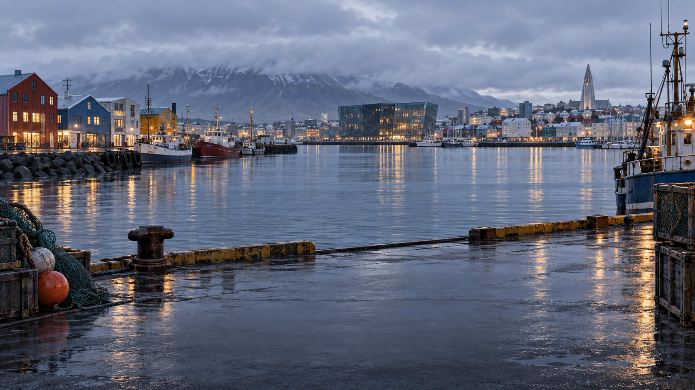
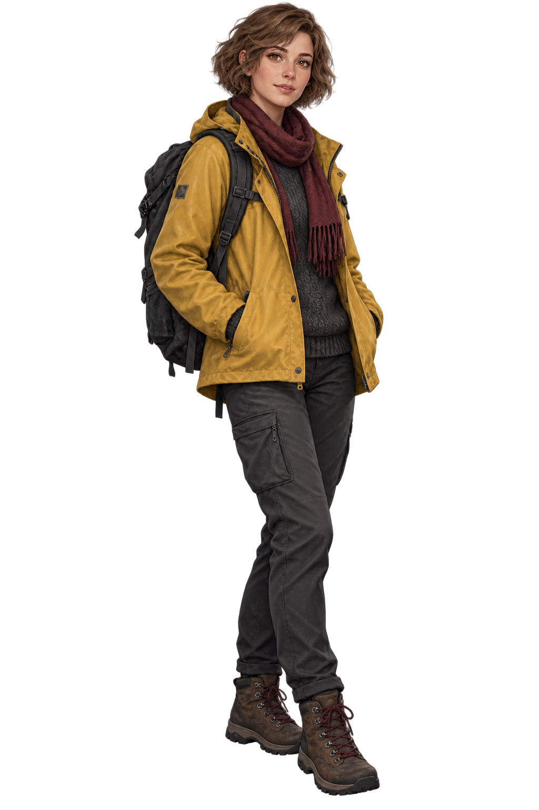
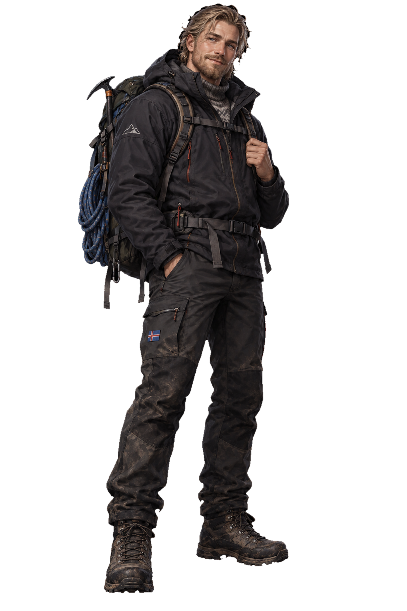
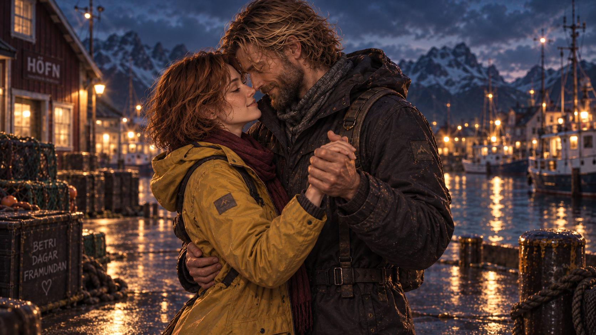

ЭРИК · 04:18 PM
«Иногда маршрут становится честнее, когда мы перестаём делать вид, что знаем, куда идём».

Глава 04 · Хёбн
Свет, который остаётся
Некоторые моменты не требуют обещаний.
Алиса · выбор
Что ты скажешь Эрику?
Выбор изменит тон следующей сцены
Система
Настройки чтения
Альбом Алисы · 07 / 18
Места, где мы были
Сезон завершён
Твой маршрут
продолжается
Исландия остаётся позади. Но честный разговор — уже нет.